阅读词表
| 词条 | 拼音 | 类型 | 说明 |
|---|---|---|---|
| 偃师商城 | yǎn shī shāng chéng | site_or_culture | 商代早期城址，位于二里头以东。 |
| 殷墟 | yīn xū | site_or_culture | 晚商都邑遗址，甲骨卜辞的重要出土地。 |
| 夯土 | hāng tǔ | concept | 把土层层夯实形成建筑基础或城墙的技术。 |
| 粟 | sù | rare_word | 古代重要旱作粮食，通常指小米。 |
| 冶铸 | yě zhù | concept | 冶炼并铸造金属器物。 |
| 东下冯商城 | dōng xià féng shāng chéng | site_or_culture | 山西夏县早商城址，文中讨论其仓储区。 |
| 乇 | tuō | rare_word | 古字，本义多释为草叶或草木萌生出土之形；此处出现在骨刻释文“乇土羊”中。 |
| 城邑 | chéng yì | concept | 古代有人群聚居、具有一定组织和防御功能的城镇聚落。 |
| 垣曲商城 | yuán qū shāng chéng | site_or_culture | 山西垣曲早商城址，位于黄河北岸交通要地。 |
| 宫殿区 | gōng diàn qū | concept | 都邑中宫殿和王室活动集中的区域。 |
| 容积 | róng jī | concept | 容器或空间所能容纳的体积。 |
| 石峁 | shí mǎo | site_or_culture | 陕北大型史前城址，文中与郑州商城作比较。 |
| 卜骨 | bǔ gǔ | text | 用于占卜并刻写文字的兽骨。 |
| 外郭城 | wài guō chéng | concept | 主城之外附加修筑的外层城垣。 |
| 浮选 | fú xuǎn | concept | 考古中用水分离土样里的植物种子等细小遗存的方法。 |
| 夯土地基 | hāng tǔ dì jī | concept | 夯土筑成的建筑基础。 |
| 柱洞 | zhù dòng | concept | 考古遗迹中柱子留下的洞穴痕迹。 |
| 辉卫文化 | huī wèi wén huà | site_or_culture | 豫北地区与早商前后相关的考古文化。 |
| 黄陂 | huáng pí | place | 今武汉市黄陂区，文中涉及盘龙城所在地。 |
| 盘龙城 | pán lóng chéng | site_or_culture | 湖北武汉附近早商城址，是商朝南方重要据点。 |
| 紫荆山 | zǐ jīng shān | place | 郑州地名，文中提到商代铸铜场。 |
| 西吴壁 | xī wú bì | site_or_culture | 山西绛县遗址，文中讨论为冶铜地点。 |
| 解州盐池 | xiè zhōu yán chí | place | 山西运城盐池，古代重要食盐资源地。 |
| 占辞 | zhān cí | text | 占卜时刻写或记录的辞句。 |
| 蚕食 | cán shí | rare_word | 像蚕吃桑叶一样逐步侵占、吞并。 |
| 揭竿而起 | jiē gān ér qǐ | idiom | 举起竹竿作旗帜起义，泛指反抗。 |
| 不敷使用 | bù fū shǐ yòng | idiom | 不够使用。 |
| 黍 | shǔ | rare_word | 古代旱作粮食作物。 |
| 墙垣 | qiáng yuán | rare_word | 墙壁、围墙。 |
| 绰绰有余 | chuò chuò yǒu yú | idiom | 非常宽裕，用不完。 |
| 昙花一现 | tán huā yī xiàn | idiom | 比喻事物短暂出现后很快消失。 |
| 铜镞 | tóng zú | bronze_item | 青铜箭头。 |
| 铜戈 | tóng gē | bronze_item | 青铜戈，古代横刃长柄兵器。 |
| 石范 | shí fàn | artifact | 用于铸造器物的石制模具。 |
| 杀祭 | shā jì | concept | 以杀牲或杀人作为祭祀的仪式。 |
| 凝结核 | níng jié hé | concept | 使不同群体凝聚起来的核心因素。 |
| 二元分立 | èr yuán fēn lì | concept | 两个系统或集团并列存在、相互分立。 |
| 王朝商族 | wáng cháo shāng zú | concept | 文中指商王朝整合后形成的更大规模商族共同体。 |
| 族邑 | zú yì | concept | 以部族为单位聚居形成的城邑或聚落。 |
| 差役 | chāi yì | concept | 受差遣服劳役或执行事务的人。 |
| 人牲 | rén shēng | concept | 被用于祭祀的人。 |
| 灌浆 | guàn jiāng | concept | 谷物籽粒形成并充实的生长阶段。 |
| 扇形隔间 | shàn xíng gé jiān | concept | 被十字形墙基分隔成扇形的小空间。 |
| 直辖 | zhí xiá | concept | 由中心政权直接管辖。 |
| 府库 | fǔ kù | concept | 王朝储藏财物、粮食或物资的仓库系统。 |
| 钠离子 | nà lí zǐ | concept | 盐类检测指标之一，文中用于讨论仓储区可能存盐。 |
| 自然经济 | zì rán jīng jì | concept | 以自给自足为主的经济形态。 |
| 粮赋 | liáng fù | concept | 以粮食形式缴纳的赋税。 |
| 官僚机构 | guān liáo jī gòu | concept | 负责行政、管理的官员组织体系。 |
| 二里冈文化 | èr lǐ gāng wén huà | 项目词典 | 早商时期中原考古文化。 |
| 甲骨卜辞 | jiǎ gǔ bǔ cí | 项目词典 | 商代刻写在甲骨上的占卜文字。 | 刻写在龟甲兽骨上的占卜文字。 | 刻写在甲骨上的占卜记录。 | 刻写在龟甲兽骨上的占卜辞句。 |
| 郑州商城 | zhèng zhōu shāng chéng | 项目词典 | 商代早期大型城址。 |
| 长江流域 | cháng jiāng liú yù | 项目词典 | 长江水系覆盖的广大地区。 |
| 东下冯 | dōng xià féng | 项目词典 | 晋南地区与二里头时期相关的考古文化类型。 |
| 二里冈 | èr lǐ gāng | 项目词典 | 郑州一带早商文化的重要遗址和文化命名地。 |
| 偃师 | yǎn shī | 项目词典 | 今河南洛阳附近地名，二里头遗址所在地。 |
| 先商 | xiān shāng | 项目词典 | 商王朝建立以前的商族阶段。 |
| 冶铜 | yě tóng | 项目词典 | 从铜矿石中冶炼铜料的技术。 |
| 卜辞 | bǔ cí | 项目词典 | 甲骨占卜后刻写或记录的辞句。 | 甲骨上记录占卜的文字。 | 占卜时刻写或记录的辞句。 |
| 商族 | shāng zú | 项目词典 | 商王朝建立前后的族群共同体。 |
| 商汤 | shāng tāng | 项目词典 | 商朝开国君主，传统记载中灭夏。 |
| 商王 | shāng wáng | 项目词典 | 商朝王。 |
| 土著 | tǔ zhù | 项目词典 | 本地原有居民或族群。 |
| 地层 | dì céng | 项目词典 | 遗址中不同时期堆积形成的层次。 |
| 基址 | jī zhǐ | 项目词典 | 建筑物遗留下来的基础位置。 |
| 宫城 | gōng chéng | 项目词典 | 城邑内宫殿或王室建筑集中的城垣区域。 |
| 征伐 | zhēng fá | 项目词典 | 出兵讨伐。 |
| 春秋 | chūn qiū | 项目词典 | 孔子时代相关的编年史经典。 |
| 杂糅 | zá róu | 项目词典 | 混杂融合在一起。 |
| 殷都 | yīn dū | 项目词典 | 商朝后期都城区域，今安阳殷墟一带。 | 商朝后期都城区域。 | 晚商都城，通常指安阳殷墟。 |
| 水牛 | shuǐ niú | 项目词典 | 商人畜牧和祭祀中涉及的家畜。 |
| 王权 | wáng quán | 项目词典 | 王的政治统治权力。 |
| 疆域 | jiāng yù | 项目词典 | 国家或政权控制、影响的地域范围。 |
| 盘庚 | pán gēng | 项目词典 | 商王名，以迁都殷地著称。 |
| 粟米 | sù mǐ | 项目词典 | 小米；北方旱作农业的重要作物。 |
| 肋骨 | lèi gǔ | 项目词典 | 胸部骨骼。 |
| 肱骨 | gōng gǔ | 项目词典 | 上臂骨。 |
| 良渚 | liáng zhǔ | 项目词典 | 长江下游新石器时代重要考古文化和古城遗址。 |
| 迁徙 | qiān xǐ | 项目词典 | 群体从一地迁移到另一地。 |
| 遗存 | yí cún | 项目词典 | 古代活动留下的遗物、遗迹或现象。 |
青铜器词表
| 器名 | 拼音 | 类型 | 说明 |
|---|---|---|---|
| 镞 | zú | bronze_item | 箭头。 |
| 戈 | gē | bronze_item | 古代横刃长柄兵器。 |
| 斛 | hú | bronze_item | 古代量器和容量单位。 |
章节导读札记
| 主题 | 札记 | 操作 |
|---|---|---|
| 暂无章节导读札记 | ||
用户札记
| 类型 | 页 | 内容 |
|---|---|---|
| 暂无用户札记 | ||
原书阅读器页 117原书物理 PDF 页 115印刷页 103
第六章早商：仓城奇观
商代可能是中国历史上最为奇异的一段，如果将其分成早、中、晚三期，人们最熟悉的是晚商（殷墟阶段）。殷墟发掘最早，有精致的青铜器、甲骨文和大规模杀祭场。
但其实，早商的奇迹更多，它在二百年左右的时间里创造的成就，其后一千年都难以再现。那是一种几乎抵达秦汉大一统王朝的气象。比如，它拥有地跨千里的遥远殖民城邑，有规模庞大到脱离当时人口总量和经济水平的大型仓储设施。
可以这么说，在早期青铜时代，早商堪称一场“现代化”奇迹。
东西两都
在古史中，夏和商经常被相提并论，但从考古来看，它们几乎是两个截然不同的政治体。
夏朝-二里头文化保守，并不热衷对外扩张，虽发展出东亚最为领先的青铜技术，但一直将其封闭在二里头作坊区厚重的围墙之内，很少转化为用于扩张的军事实力。
但商朝不同，经过开国之初的数十年整合和同化，商族开始大规模扩张，到开国二百年时，商的统治范围已经超过夏十倍以上，包含无数语言和风俗不相同的族群。从这个层面来说，早商才是中国历史上的“第一王朝”。
不过，如果回到开国之王商汤的时代，形势还没有这么乐观。就如二里头考古显示的，夏朝的征服者并不是一个统一的族群或国家，而是来自不同文化区的松散同盟，因此，需要先把他们整合成一个新族群（新商族），并确保继承夏朝的一切技术积累。为此，商汤应当花费了很多思虑：他和后世两三代商王都致力于此；他们的努力及成效虽然没能载入史书，但被两座大城的遗址记录了下来。
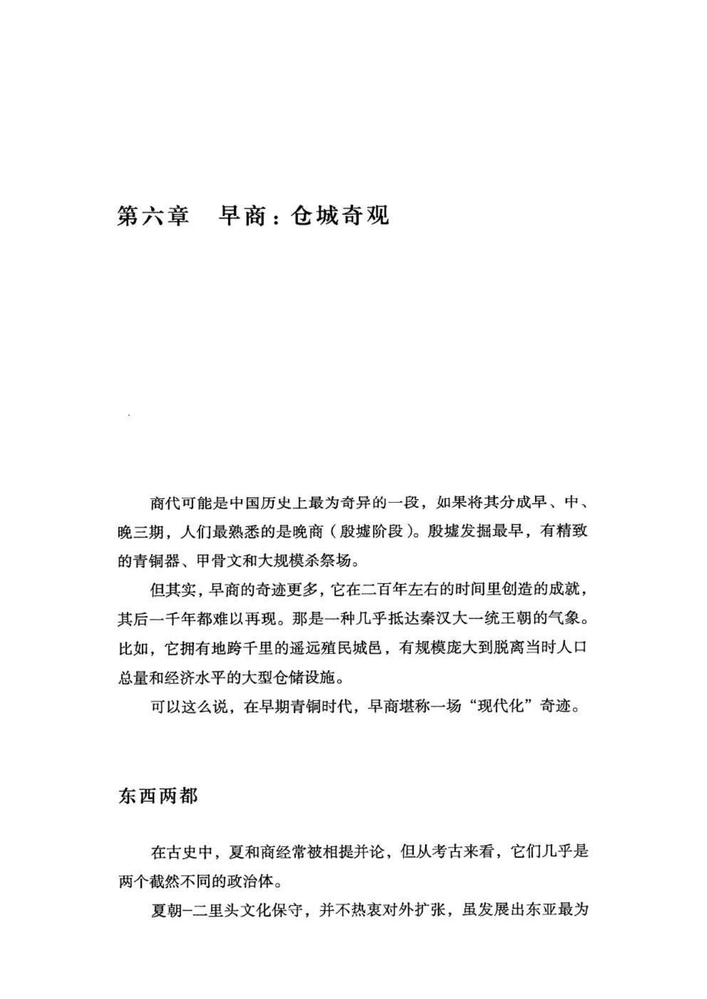
原书阅读器页 118原书物理 PDF 页 116印刷页 104
从考古提供的信息看，商族人灭亡夏朝之后，一度保留了二里头古城，并同时开始兴建两个中心城市：一座是在二里头以东8公里处的偃师商城；另一座是在二里头以东100公里处的郑州商城——堪称早商的东西两都。
西都位于昔日夏朝的核心区，似乎有拆分二里头旧民的考虑：偃师商城以旧有的二里头陶器文化为底色，外来文化不多，初始阶段的主要居民应当是被迁来的二里头古城人群，以及少量商人征服者。[[fn:1]]
郑州商城则建立在旧有的二里头文化村落基础上，是商王安置各路同盟军的主要据点，外来文化因素更多，有北方的下七垣、辉卫和东方的岳石等陶器文化类型，也有从二里头迁来的铸铜作坊。一座城邑竟能在中短期内汇聚如此之多的陶器文化类型，在此前和此后的历史中从未有过。
显然，这是一个为攻占夏朝而形成的“东方部落联盟”：各自使用的陶器风格不统一，语言或方言的差异也很大，充当“凝结核”的是规模很小的（先）商族。
早商部分城址示意图[[fn:2]]（图）
夏都二里头固然繁华了数百年，但内部一直是二元分立结构：宫殿区和铸铜作坊区长期保持共治，而且彼此的矛盾还是夏朝灭亡的直接根源。征服二里头后，商人对这两种人群加以分化、拉拢，并拆解到二里头和偃师两座古城中，最终把他们同化入自己的王朝之内。
在商朝早期，偃师商城和郑州商城都不大，只营建了小型的宫城。但几十年后，二里头古城已被完全废弃，人口全部迁入了偃师和郑州商城，所以两都迅速膨胀了起来：修建有城墙和规模更大的宫殿，以及兴旺繁荣的各种手工作坊和平民居住区。这两座商城的寿命都有二百年左右，是商朝前期的统治中心。
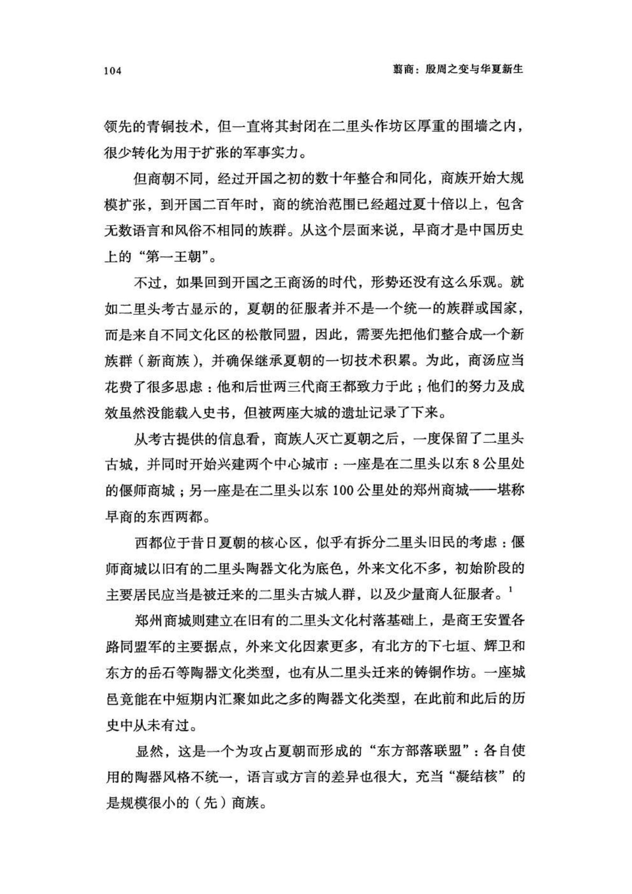
原书阅读器页 119原书物理 PDF 页 117印刷页 105
二里头古城被废弃时，商族统治区内多元的陶器文化融汇成了一种新风格，至少是二里头、下七垣、岳石和辉卫四种成分的杂糅和发展，被考古学家命名为“二里冈文化”。二里冈是郑州商城南侧一处小遗址的名字，和“二里头”只有一字之差，事实上，它也的确继承了二里头陶器的很多特点。
由此，来自各地的陶器工艺在郑州发生融汇，并迅速向外蔓延，说明制造和使用这些陶器的人群已经同化到一起，是新的商民族诞生的标志。它比之前的（先）商族规模大得多，可以称之为“王朝商族”。至此，商朝的多部落联盟体变成了一个整体民族。
当然，旧有的下七垣、岳石和辉卫文化依然在各自故地延续着，它们也许会被新兴的早商（二里冈）文化蚕食和吞并，但那还是以后的事。在早商阶段，迅速消亡的只有夏-二里头文化，因为商朝最优先占领的就是昔日夏朝的疆域。
二里头的衰亡和偃师、郑州商城的兴起，显示了夏商交替之际空前剧烈而复杂的族群整合运动：自新石器以来的漫长历史中，从没有哪一场部族征服和改朝换代，能带来如此剧烈的日用陶器的异地汇聚与风格转变。
商人对待夏人和盟友的手段也很高明。至于背后的原因，可能在于他们曾经长期游牧和贸易，在东部平原迁徙游走数百年，积累了足够多的关于东方各族群的知识。这是其他任何人群都不具备的优势。
灭夏时，商人已有了初步的文字。这是建立真正王朝统治的必要工具。商人应当也会利用宗教的神秘感和威慑力，虽然我们目前对于商初宗教的了解还很少，但从后来其在商朝的重要地位看，早期的商王们肯定在宗教上投入过相当大的精力。
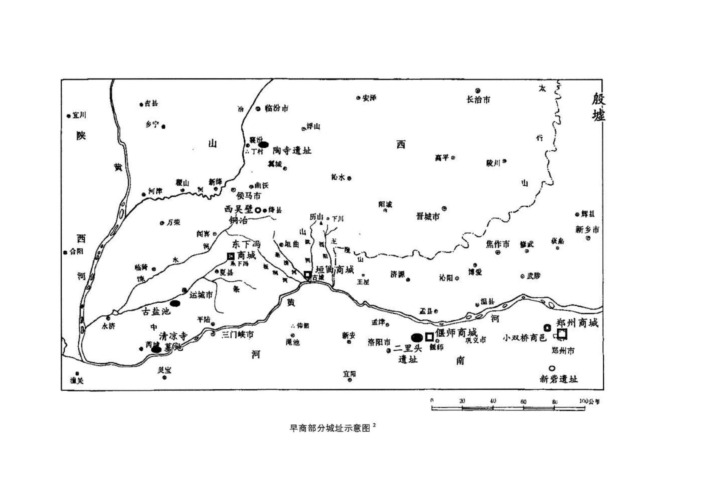
原书阅读器页 120原书物理 PDF 页 118印刷页 106
待东西两都初具规模后，郑州商城和偃师商城的主城面积（不包括外郭城）分别约为3平方公里和2平方公里。其共同点是，都有宽约10米的夯土城墙，城内有宫城，有大型夯土宫殿区，而且宫殿区北侧都有石砌的长方形人工池塘；不同点是，偃师商城内有好几处大型仓储区，但铸铜等手工业规模不大，郑州商城则面积更大，人口和各种手工业设施也更多，外围还有一圈外郭城。
两座商城的保存情况也不一样。在后世，郑州商城一直是重要城邑，到现代更被市区占据，遗址破坏严重，各发掘地点比较零散，难以重现商城的整体风貌。偃师商城则一直是农田，所以保存相对完整，比如，有石砌的城市供排水系统，排水沟宽近1米，从西到东贯穿整座城市。
但新石器以来，早商的东西两座庞大都城，可谓绝无仅有。它们都有厚重的夯土城墙，显然是要防御外来威胁，但从当时的形势看，似乎没有什么势力能威胁新兴的商王朝：夏都二里头人不重视城防，一直只有小规模的宫城，没有修筑大城；相比之下，新兴的商人更有危机感，可能是担心被征服的夏人聚落以及土著部族随时会揭竿而起，所以不遗余力地修筑了两座大城。
更早的石家河、良渚和石峁古城，虽然面积接近郑州商城，但内部有很多不宜居的部分，比如，石峁城内梁峁坡地起伏，石家河和良渚的城墙本质上是防洪堤与建筑台地，城内有很多湿地和河汊。而郑州和偃师商城，则方正规则，内部多是宜居的平坦土地，能容纳的人口更多。
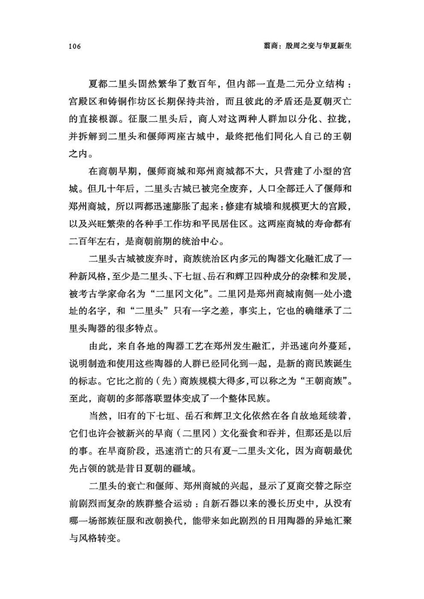
原书阅读器页 121原书物理 PDF 页 119印刷页 107
二里头出现的各种现象显示，早期王朝内部大都是自治部族，和王权的关系相对松散，而偃师和郑州商城则规划严密，内外分明，呈现的是早期商王整合各部族的决心：在聚族而居的状态下，一个部族聚落（族邑）就是一个独立的经济体，有自己的手工业和农牧业，而入住到大城内，需要放弃很多传统的自给自足生活，融入王室主导的更大的经济和政治体中。
相比偃师，郑州商城更特殊，其主要的手工业都在城外，如铸铜和制骨作坊，而城内很可能主要是为王室服务的人群，提供武装力量和管理、差役等。
早商王朝应当已经使用文字和文书。郑州商城范围内曾发现少数几件残破的刻字骨片，其中一片牛肋骨上有若干个字符，被释读为：
又，乇土羊，乙丑贞，比（及）孚，七月[[fn:3]]
〔校疑：原书字形近“乇”，网页文本误作“毛”；此处为骨刻释文，含义仍需核对拓片/李维明文〕
它的行文风格和殷墟甲骨卜辞很相似，但这几片卜骨的原物和地层信息已经缺失，无法判断更精确的时代。据推测，属于商代早期[[fn:4]]，比殷墟早一百年以上。这说明，早商已经有了成熟的文字，而且还出现了在卜骨上刻占辞的做法。
青铜扩张潮
早商阶段，商朝的扩张极为迅猛。就连上千里外的长江边（今武汉市郊黄陂区），都出现了一座繁荣的城堡盘龙城；而在中原地区，商人城邑更是星星点点。
先商族的贸易游商生涯，使他们比其他族群更了解各地的交通地理和物产民俗，不仅如此，新王朝的成员来自周边各文化圈，对于扩张疆域也有很大帮助。而且，商王家族擅长用生意人的思维来管理新王朝，扩张目标主要指向矿产资源丰富的地区，如盐矿和铜锡矿产地。对商朝的远程扩张来说，贸易是和征战同样重要的手段。
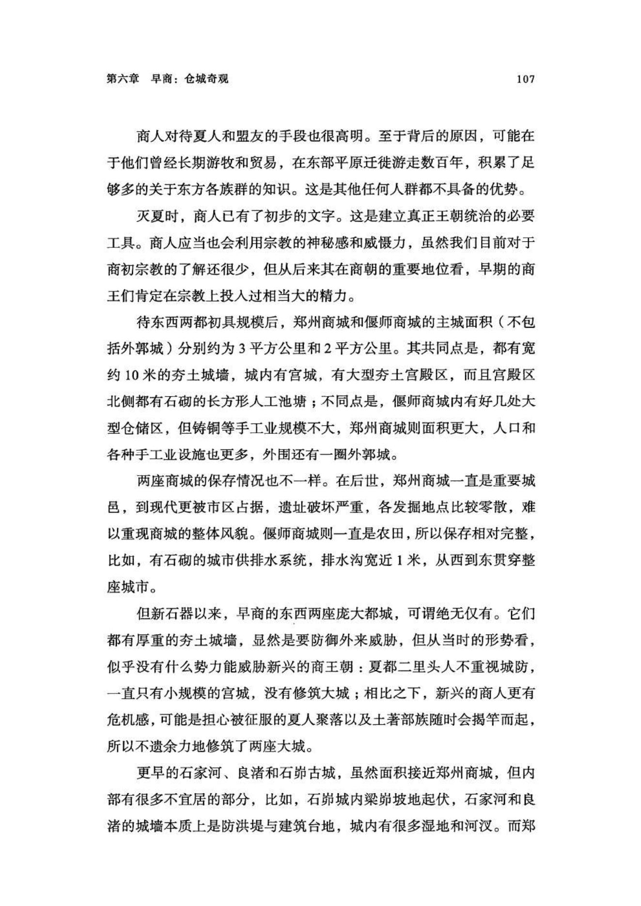
原书阅读器页 122原书物理 PDF 页 120印刷页 108
商人很重视夏朝的青铜冶铸技术，偃师和郑州商城初建时，还没来得及建城墙，就从二里头古城移植了铸铜作坊。郑州商城的铸铜业尤其发达，当城南的铸铜场不敷使用时，又在城北的紫荆山新建了一座冶铸场。这些冶铸场沿袭了二里头的遗风，在铸铜工作区地面下均埋有人牲。
青铜技术曾长期被圈禁在二里头，而商人则更现实，各商人部族均掌握了冶铸铜技术，而且不仅是在偃师和郑州两座核心商城，每一支向远方征伐的商人队伍也都有铸铜技师。他们携带着铸造铜镞、铜戈的石范，一旦发现小规模铜矿，便可以就地生产兵器。在早商阶段，铜兵器的生产数量急剧上升，出土地点遍布中原各省，甚至蔓延到长江流域，促使一些南方土著族群也借机学会了铸铜。可以说，是商朝人真正普及了青铜冶铸技术。
王朝扩张的基础是人口数量，而这需要农业的支撑。在这方面，商朝也超越了夏朝。熟悉商贸和水牛养殖的商族人一旦经营农业，就表现出超常的能力：夏朝-二里头古城主要依赖水稻，这是夏人改造洛阳盆地沼泽的成果；而商人兴起于黄淮湿地平原，对水稻不会陌生，但他们的农业更为均衡。对郑州商城粮食浮选的一篇统计论文显示，样本中，粟、水稻和小麦各有1576粒、191粒和91粒，统计者的结论是：“至少在商代早期，粟仍是郑州地区古代先民种植的最重要的农作物种类。”[[fn:5]]
小麦颗粒的千粒重接近稻米，把各种粮食籽粒折算成重量，粟米只比水稻略多，小麦则占到了18.3%，也很可观。
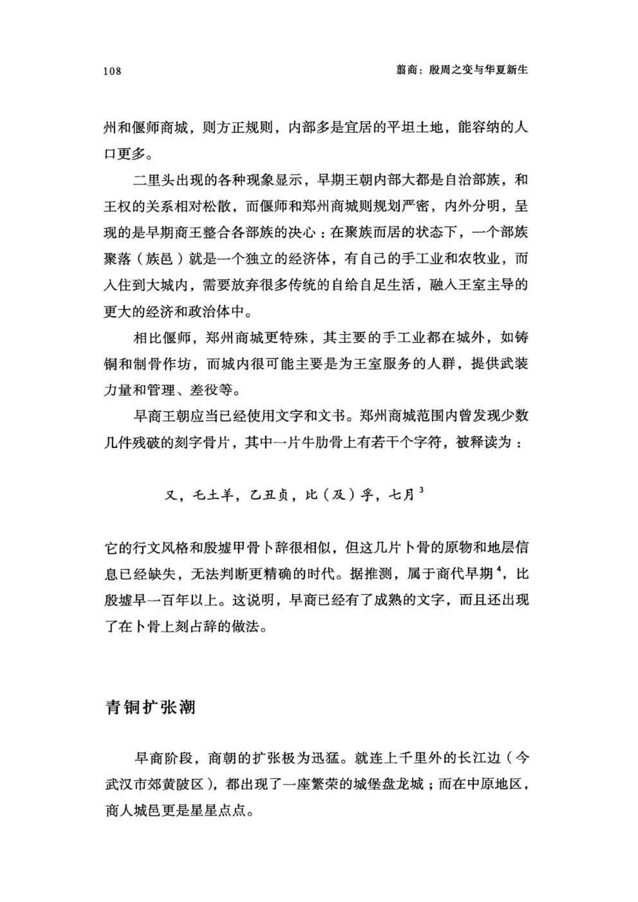
原书阅读器页 123原书物理 PDF 页 121印刷页 109
表五：郑州商城出土粮食颗粒及折合重量
| | 粟 | 水稻 | 小麦 | 黍 | 合计 |
|------- |------ |-----|------|----|-----|
| 粒数 |1576 | 191| 91 | 44 | 1902 |
|千粒重（克） | 2 | 16 | 16 | 7 | |
| 粒数占比 | 82.86% | 10% |4.78% |2.3% | |
| 折合克数 | 3.152 | 3.056 | 1.456 | 0.308 | 7.972|
| 重量占比 | 40.5% | 38.3% | 18.3% | 3.9% | |
如上表所示，和二里头时代相比，水稻的比例下降得很明显，旱作的粟和黍则明显回升。小麦更特殊一点，虽然属于旱作庄稼，但在春末灌浆季节需要的水量大，而华北春末时节少雨，要在华北地区大面积种植小麦，需要更成熟的灌溉知识和设施。因此，小麦应当是水稻种植的衍生产品。此外，这个阶段的气候湿热程度可能比二里头时期有所下降，也可能导致水稻数量减少。
郑州商城的粮食样本显示，商人已熟练掌握了各种主要作物的种植技术，而其意义不仅是人口增殖，也便于商人向各地殖民扩张，因为他们拥有适应各种自然环境的粮种和技术。
晋南的殖民城垒
早商王朝的扩张轨迹，在山西南部表现得最明显。
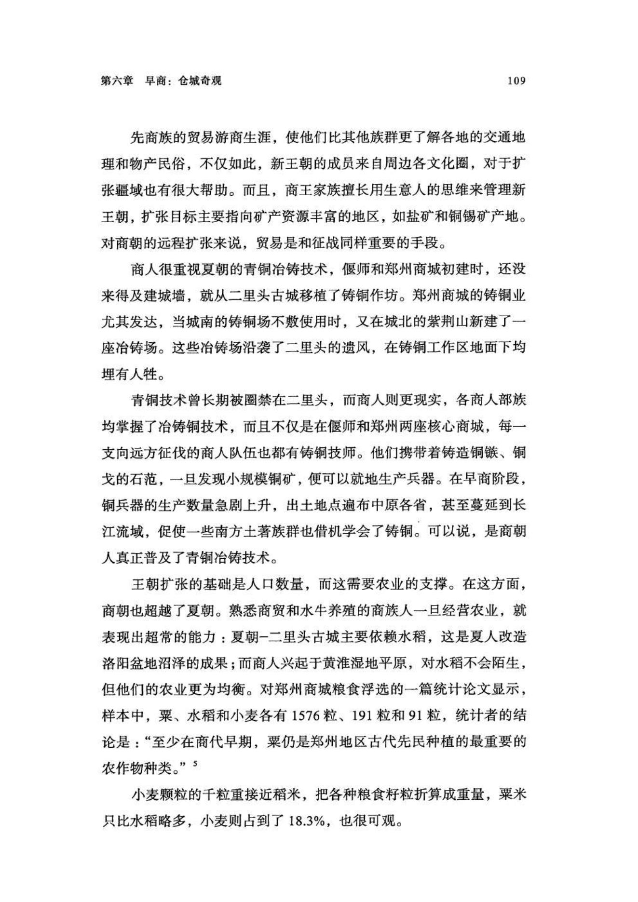
原书阅读器页 124原书物理 PDF 页 122印刷页 110
从偃师商城向西北，逐渐进入丘陵山地，200公里后渡过黄河，便是山西省垣曲县的古城镇。黄土台地上有一座夯土小城，控扼黄河渡口，是沟通豫西和晋南的要塞，考古学者称其为“垣曲商城”。
从垣曲古城继续向西北，翻越中条山脉，进入开阔的运城盆地，又出现了一座夯土小城，这便是夏县东下冯商城。垣曲和东下冯商城都不大，城墙边长三四百米，城池面积约0.1平方公里，建造时间也接近，都在商朝开国之后近百年。
晋南中条山区有零星的铜矿，夏朝时，夏县东下冯和绛县西吴壁都出现了冶铜工场，应当和二里头夏都存在铜料贸易，但还无法确定是否属于夏朝直接统治。而在商朝初期，关于王朝统治的铁证出现了。
在早商，东下冯不但建起了夯土城墙，还有密集的大型仓库建筑：位于城内西南角，每座建筑的夯土地基皆圆形，直径10米左右，中央有柱洞，十字形夯土墙基把建筑分成四个扇形隔间，圆形地基外缘还有外墙的一圈柱洞和墙基。总体来看，仓库是圆形的造型。
圆形建筑成排分布，密集而有序。有限的发掘区内已经挖出十几座，而根据钻探迹象推测，这组建筑至少有七排，每排六七座，总数近50座。
2019年，东下冯发掘四十年后，在偃师商城也发现了同样的大型仓储区：地基呈圆形，室内有十字形木骨土墙，和东下冯的建筑完全一样。由此，证实了东下冯和商朝的直辖关系。
东下冯仓储区F501、F502圆形建筑发掘照片[[fn:6]]（图）
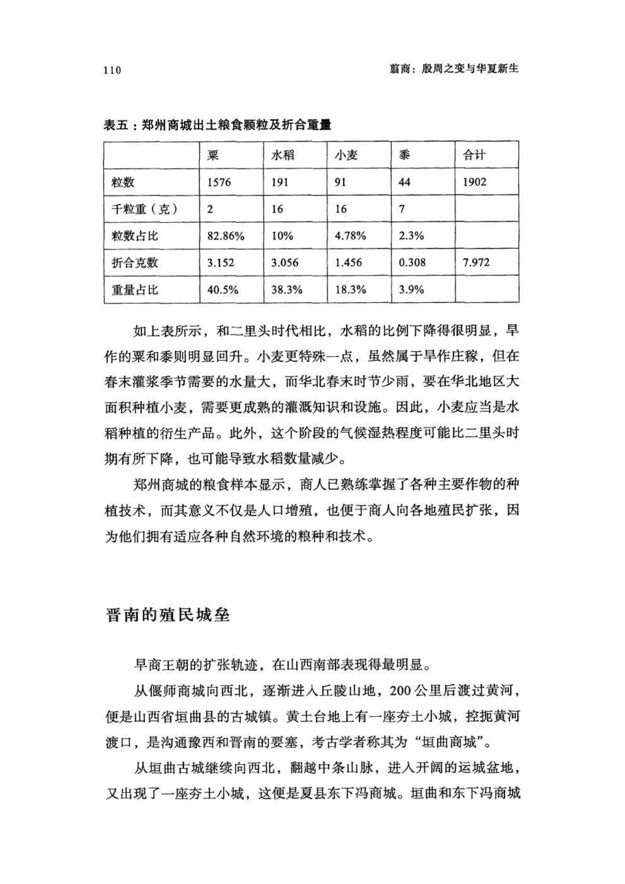
原书阅读器页 125原书物理 PDF 页 123印刷页 111
偃师商城内的这片仓储区，紧邻西城墙，编号为VIII基址群，区域面积达四万平方米，接近三个标准操场，估计有圆形仓储建筑100—120座。
偃师和东下冯的圆形仓储区基本同时建成，造型和整体布局完全一致，说明出自同一群规划者，是商王朝主导之下的产物；尤为重要的是，它也显示了商王朝的政治控制范围。这是仅靠陶器“文化”难以确证的命题。而且，东下冯和偃师商城的政治关系一旦确定，处在它们之间的垣曲商城的归属也就解决了。
以上说明，在商朝早期，王朝的统治已伸入晋南运城盆地。这段路程不算太遥远，但隔着黄河和中条山脉，地理环境和之前商人习惯的东部大平原很不一样。可见，商人在努力探索新的地域。
巨型府库之谜
接下来的问题是，这种圆形建筑的功能是什么？有学者认为是粮仓，也有认为是存放食盐的仓库。中条山北麓有一片咸水湖泊形成的古盐池——解州盐池，距离东下冯商城仅有60公里，路程地势平坦，交通便利，而再去往垣曲和偃师商城，则需要翻山和渡过黄河，交通比较困难。所以商人很可能在东下冯设立了庞大的食盐仓储和转运站。有学者称，已经对东下冯商城仓储区的土样做过鉴定，这里的钠离子浓度远高于其他地点。这似乎也证明了圆形建筑是食盐仓库。[[fn:7]]
西都偃师商城并不只有这一处仓储设施。在它之前，已经发现两处长方形的大型仓储建筑群，分别编号为II区和III区：南北狭长，呈网格状紧密分布，每座建筑南北长约25米，东西宽约7米。
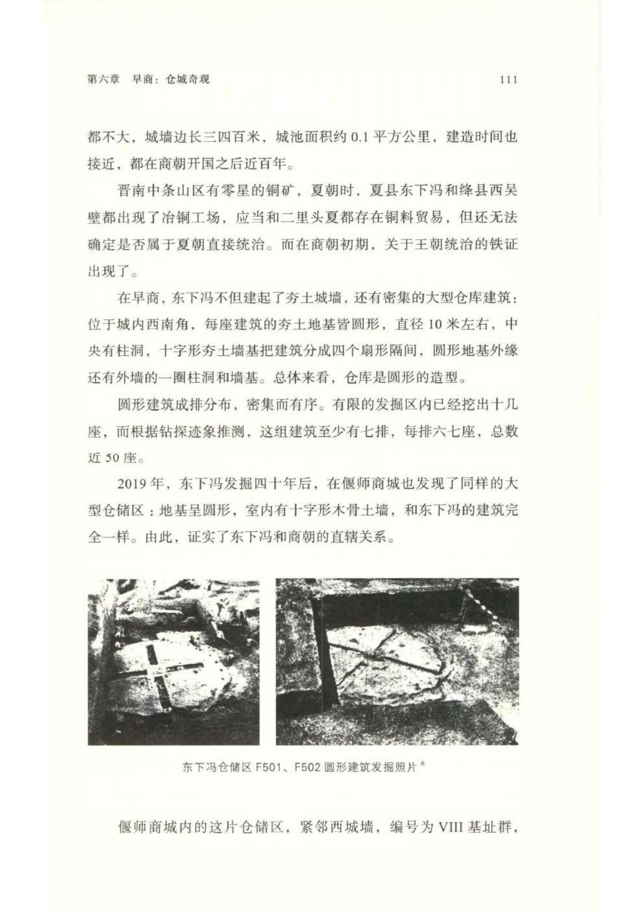
原书阅读器页 126原书物理 PDF 页 124印刷页 112
数量同样惊人。II区有六排，每排约16座，总数近百座。III区的规模类似。仓储建筑中间还有水池的遗迹，可能是为灭火储备的水源。
偃师商城II区长方形仓储建筑分布平面图（图）
偃师商城III区长方形仓储建筑分布平面图[[fn:8]]（图）
东下冯和偃师的这些仓储区，环境都很类似：有院墙环绕的封闭空间，戒备较严；使用时间可能近百年，有修补和重建的痕迹；仓储区内少有生活垃圾（陶片），说明几乎没人在里面生活，应该属于守卫森严的王朝禁地。
偃师II区和III区的仓储区里藏的到底是什么，目前还没有答案。遗址破坏比较严重，保留下来的只有夯土地基，基本没有留下墙垣和室内设施。有学者推测是兵器库，但规模过于庞大，当时应当没有如此多的兵器需要集中存放。
从空间和需求等因素看，粮仓的可能性比较高。但当时的粮储很难装满如此巨大的空间：以单个建筑容积长20米、宽5米、高3米统计，这二百座建筑的容积为六万立方米，可储粮七万余吨。当时的偃师商城总人口不可能达到六万，即使以六万计，这些粮食也足够吃四五年。在以自然经济为基调的上古时期，如此巨大的粮储设施很不可理解。
从粮食来源估算，哪怕是当时洛阳盆地的所有聚落缴纳的粮赋，也难以填满这些仓库；也许还有外地缴纳，但在当时的交通条件下，粮食并不适合陆路远距离运输——除非借助黄河-洛河航道。从商族人习惯湿地生活和行船来看，这种可能性是存在的。在东汉时期，都城洛阳东郊就有巨大的国家粮仓“常满仓”：“永平五年作常满仓，立粟市于城东，粟斛直钱二十。”（《晋书・食货志》）常满仓位于偃师商城以西近10公里，其运输也大半依靠洛水-黄河水道。
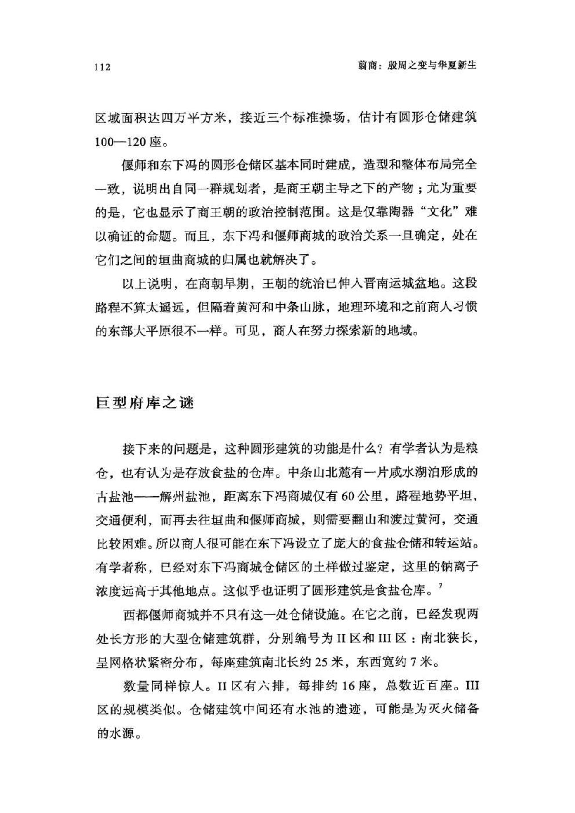
原书阅读器页 127原书物理 PDF 页 125印刷页 113
再来看圆形仓库。如果东下冯和偃师商城的圆形建筑确实是食盐仓库，就会带来另一个问题：食盐库存远远超过了当地的需求总量。不考虑十字形隔墙，按直径10米、高3米计算容积，100座圆形盐仓的总容量可以达到五万吨，扣除掉隔墙、廊道等空间，容纳一二万吨食盐绰绰有余。而以每人每年需要食盐一公斤计算（比现代平均消费量略低，上古时代食盐比较奢侈，普通人很难满足需求），这些盐可供一二千万人吃一年。在早商，黄河和长江流域的总人口不会有这么多，商朝也不可能把食盐销往这么大的地区。
且不论偃师和东下冯的大型仓储区的具体作用，到晚商殷墟时期，甚至后来的西周和春秋，都没有发现过如此规模的仓储设施。直到战国时期的洛阳，才出现了堪与早商偃师相比的粮仓。[[fn:9]] 也就是说，在之后一千年里，偃师商城的仓储区规模都没有被超越。
如此巨大的仓储区说明，早商时期的王权有极强的控制力，甚至需要一个专业的官僚机构负责营建和管理。可以和它进行类比的，是战国秦汉时期的君主集权国家机构。但很可惜，早商时代没有留下任何文字记载，宏大王权像是昙花一现，然后就消失在了人们的记忆中。即便是殷墟晚商的甲骨卜辞，也没有任何关于早商政权和社会形态的记录。考古发现的这些现象，给我们提供的疑惑多于解答。
注释
1《史记•殷本纪》等史书记载，商朝曾经五次迁都，最后一次是盘庚王迁殷。殷都遗址（殷墟）已经有了充分的考古发掘，至于前面四座都城在哪里，却一直没有定论，和目前的考古发现也无法完全吻合。
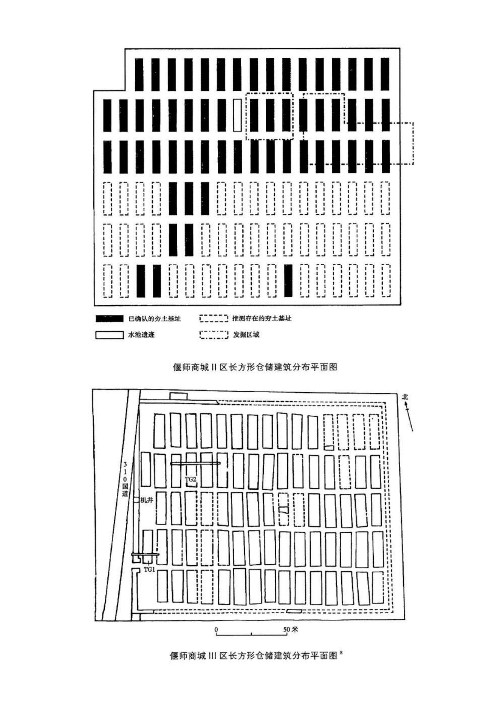
原书阅读器页 128原书物理 PDF 页 126印刷页 114
2示意图改编自中国历史博物馆考古部《垣曲商城（一）：1985—1986年度勘察报告》，科学出版社，1996年，第5页。
3李维明：《郑州二里岗早商骨刻字符与乇土祭祀》，《中国文字博物馆集刊》2021年9月。
4尤柔螭的一篇文章《二里岗遗址牛骨刻辞》（http://www.kaogu.cn/cn/kaoguyuandi/kaogubaike/2013/1025Z34220.html）有这样的概述：1953年发现于河南省郑州市货栈街的属于二里岗商文化期的两片牛骨，分别为牛的肋骨和肱骨。现下落不明，不知所踪。原骨曾由陈梦家先生鉴定研究，相关资料刊发于《文物参考资料》（1954年）及其著作《殷墟卜辞综述》以及1959年出版的《郑州二里岗》报告中。其中牛肱骨刻辞仅有1字，今各家考释多读为“又”字。而牛肋骨刻辞，陈梦家先生认为有10字，李学勤先生也认为有10字，但李维明先生认为各家释文漏掉1字，应为11字。全文原10字释文为：又土羊乙丑贞从受十月。李维明先生将其释为：又，乇土羊，乙丑贞，比（及）孚，七月。陈梦家先生认为该刻辞不是卜辞，而是习刻文字，时代为殷墟时期。后来河南省考古工作者认为，该牛骨出土于经过扰动的二里岗期的地层中，应属商代早期。目前大多数学者认同此观点。
5贾世杰等：《郑州商城遗址炭化植物遗存浮选结果与分析》，《汉江考古》2018年第2期。
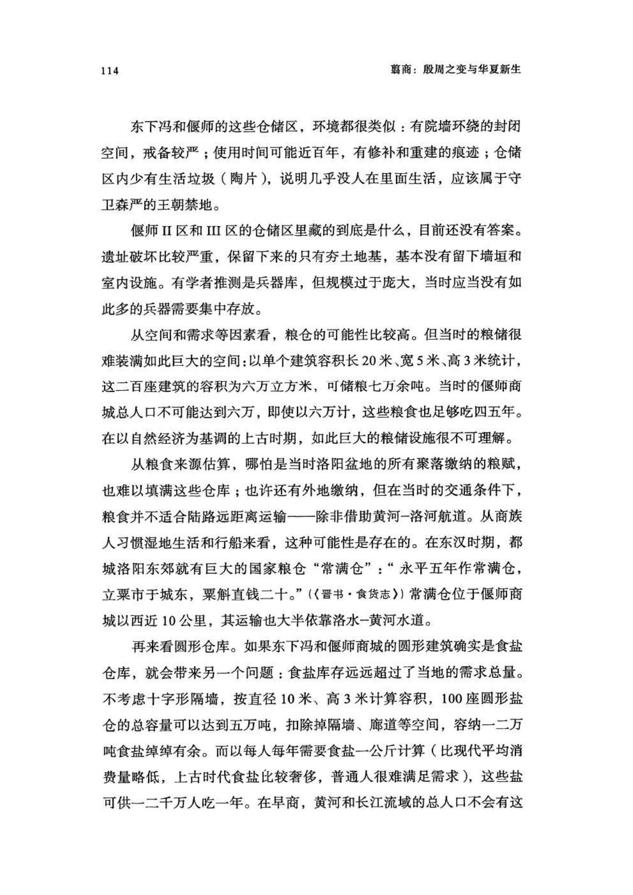
原书阅读器页 129原书物理 PDF 页 127印刷页 115
6中国社科院考古所：《夏县东下冯》，文物出版社，1988年。
7马金磊：《运城盐池在史前考古学研究中的作用》，《科教导刊•电子版》2013年第4期。但该论文没有列出检测样本的具体数据，所以目前少有学者采用。
8中国社科院考古所：《偃师商城》第一卷。
9洛阳博物馆：《洛阳战国粮仓试掘纪略》，《洛阳考古集成•夏商周卷》，北京图书馆出版社，2005年。
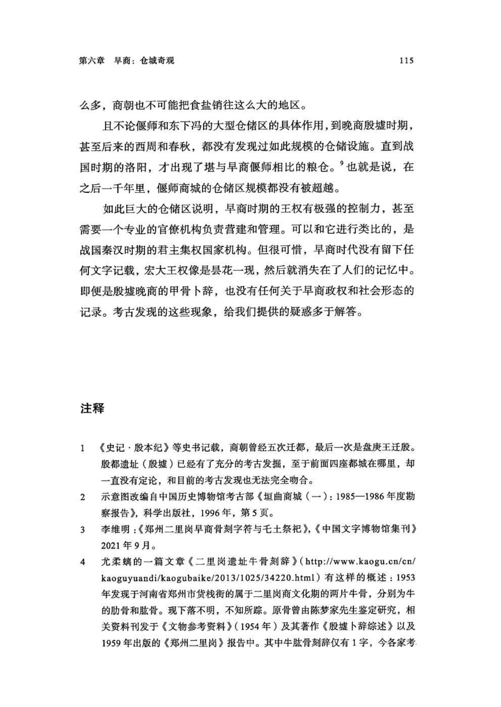
原书阅读器页 130原书物理 PDF 页 128印刷页 116
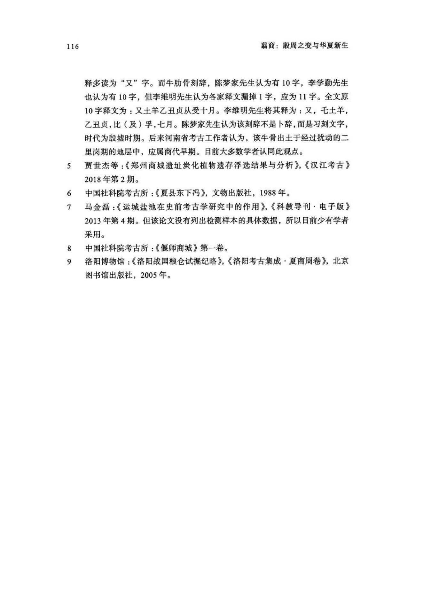
编辑札记
标记
先在正文中选择文字，再输入拼音；可用“拼音；简注”。